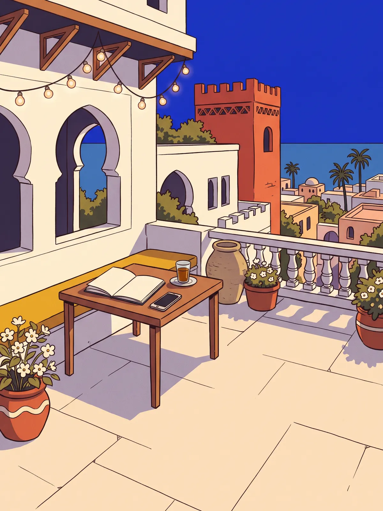
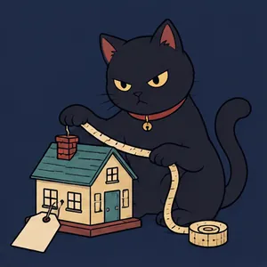
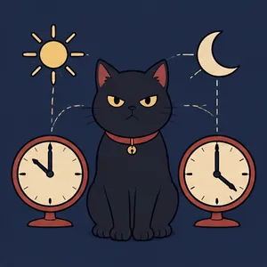
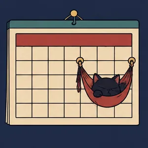

/ CARNET DE ROUTE · LA VIE NOMADE
Le carnet de route.
Travailler de partout, sans se raconter d’histoires : trouver ses clients, chiffrer, se protéger, tenir le décalage horaire, garder ses fichiers et ses comptes en sûreté, préparer un départ. Huit étapes, huit tampons. Les chiffres sont les vôtres, ou ceux d’une source nommée.
Selma sur la route · exemple inventé
Ouvrir l’atlas
Choisir un quartier
Les quartiers
0 quartier fait sur 8
Selma sur la route · exemple inventé ·
Trouver ses clients



Le dossier · Acte I · 1 / 8
Clients
Trouver ses clients · avec Techno Pigeon
Selma quitte Bordj pour une saison et emporte son travail. Pour payer la route, il lui faut trois clients par mois ; elle commence par écrire.
La règle
Les clients se comptent : ceux qu’on veut, divisés par la part qui répond, puis par la part qui signe.

L’exercice de terrain
Le calcul, avec vos chiffres
Les chiffres de départ sont ceux de la leçon. Changez-en un : le résultat suit, et l’exercice est fait. Rien n’est envoyé.
Les clients ne tombent pas du ciel : ils répondent à des messages. Combien en envoyer ? Cela se compte. Les clients que vous voulez, divisés par la part des gens qui répondent, puis par la part de ceux qui signent.
·
·
·
messages à envoyer par mois
par semaine, à peu près
Les taux de départ sont des exemples, pas des moyennes. Notez vos envois et vos réponses pendant un mois, puis mettez les vôtres.
Trouver ses clients · Une signature pour 40 messages : viser 120, ou mieux écrire.


Le dossier · Acte I · 2 / 8
Prix
Chiffrer un projet · avec Yasser
Le premier client veut un chiffre qui ne bouge plus. Selma compte ses jours avant de répondre.
La règle
Un prix de projet : le tarif journalier, fois les jours estimés, plus une marge pour l’imprévu.

Faire l’exercice de terrainL’exercice de terrain
Le calcul, avec vos chiffres
Les chiffres de départ sont ceux de la leçon. Changez-en un : le résultat suit, et l’exercice est fait. Rien n’est envoyé.
Un prix de projet, c’est du temps compté avant de commencer : votre tarif journalier, fois les jours estimés, plus une marge pour ce que vous n’avez pas vu venir. Le client, lui, veut un chiffre qui ne bouge plus.
·
· %
le prix à annoncer
à la commande, si vous demandez 40 %
Dans la monnaie que vous tapez. Pour trouver votre tarif journalier : le quartier « Tarif » de « Gagner sa vie de loin »
Chiffrer un projet · La marge paie l’imprévu ; le prix ferme ne bouge pas.
Le dossier · Acte I · 3 / 8
Devis
Le devis qui protège · avec Yasser
Avant de commencer, Selma écrit son devis : ce qui est compris, et ce qui ne l’est pas.
La règle
Un devis signé répond d’avance aux questions qui fâchent : le périmètre, l’acompte, les retouches, la propriété, le délai.

L’exercice de terrain
Lire chaque explication
Ouvrez chaque explication une fois. L’exercice est fait quand vous les avez toutes lues.
Un devis signé évite la plupart des disputes, parce qu’il répond d’avance aux questions qui fâchent. Voici cinq lignes, avec ce que le Studio écrit dans les siens. Ce sont nos conditions, pas un modèle juridique.
Le périmètreCe qui est compris, écrit en liste : les pages, les langues, les fonctions. Ce qui n’y figure pas n’est pas compris. C’est la ligne dont dépendent toutes les autres.
L’acompteAu Studio : 40 % à la commande, sur devis signé, et 60 % à la livraison, avant la mise en ligne. Un acompte montre que le projet est réel des deux côtés.
Les retouchesAu Studio : deux séries de retouches par étape, le design puis le développement, sont comprises ; les suivantes sont chiffrées à part. Sans cette ligne, un projet ne finit jamais.
La propriétéAu Studio : une fois le site payé en entier, il appartient au client, avec le code, les fichiers de design et le contenu. Écrivez à quel moment le travail change de mains.
Le délaiAu Studio : le délai ferme est fixé dès que le projet est cadré ensemble, pas avant. Un délai promis avant de connaître le périmètre est une devinette.
Le devis qui protège · Deux séries par étape, les suivantes à part : c’est écrit au devis.


Le dossier · Acte II · 4 / 8
Fuseaux
Travailler en décalé · avec Raven
Selma est à UTC+1, son client à UTC−5. Elle cherche l’heure où leurs deux journées se croisent.
La règle
Les appels se placent dans les heures que les deux journées partagent ; le reste se fait par écrit.

Faire l’exercice de terrainL’exercice de terrain
Le calcul, avec vos chiffres
Les chiffres de départ sont ceux de la leçon. Changez-en un : le résultat suit, et l’exercice est fait. Rien n’est envoyé.
Un client à six fuseaux de chez vous n’est pas un problème, c’est un calendrier. Ce qui compte, ce sont les heures que vos deux journées partagent : c’est là que se placent les appels. Le reste se fait par écrit.
·
·
heures communes
de à à votre horloge
Aucune heure commune entre deux journées de 9 h à 18 h : l’un des deux devra décaler la sienne, ou tout passera par écrit.
heures d’écart
Deux journées de 9 h à 18 h, en heures entières. L’Algérie est à UTC+1 toute l’année, sans heure d’été ; celle du client, s’il en a une, peut déplacer la fenêtre d’une heure.
Les sources du carnet [9]
Travailler en décalé · 16 h chez moi, 10 h chez lui.
Le dossier · Acte II · 5 / 8
Sac
Le sac et la connexion · avec Yasser
Dans le train de nuit, tout son bureau tient dans un sac : l’ordinateur, le disque de sauvegarde, les câbles.
La règle
Trois copies, sur deux appareils, dont une gardée hors du sac.

L’exercice de terrain
Lire chaque explication
Ouvrez chaque explication une fois. L’exercice est fait quand vous les avez toutes lues.
Votre bureau tient dans un sac : tout ce qui casse, se perd ou se coupe vous arrête net. Trois précautions : des copies de vos fichiers, assez de débit pour vos appels, et une deuxième connexion.
La règle 3-2-1Au moins trois copies de vos fichiers, sur deux appareils, dont une sauvegarde gardée ailleurs. Le centre britannique de cybersécurité (NCSC) la décrit comme une stratégie courante, valable dans la plupart des cas : si une copie est touchée, il en reste une intacte.
L’appel vidéoUn appel à deux demande peu. Zoom recommande 600 kbit/s dans chaque sens pour une vidéo de bonne qualité, et 1,2 Mbit/s en 720p. Google Meet compte jusqu’à 1,7 Mbit/s par participant en 720p, et baisse la définition si le débit manque. Ce sont les chiffres des éditeurs : testez votre connexion avant l’appel, pas pendant.
La connexion de secoursLe Wi-Fi du logement peut tomber le jour d’un appel. Gardez une deuxième voie : le partage de connexion de votre téléphone. C’est aussi ce que le NCSC conseille plutôt qu’un point d’accès inconnu : passer par le réseau mobile.
Le sac et la connexion · Trois copies, deux supports, une ailleurs.
Le dossier · Acte II · 6 / 8
Sécurité
La sécurité en voyage · avec Raven
À l’aéroport, Selma doit ouvrir sa messagerie de travail avant l’embarquement.
La règle
En voyage, les comptes valent plus que le matériel : un réseau qu’on maîtrise, la double validation, un mot de passe par compte.
Lire avant de répondre
L’exercice de terrain
Lire chaque explication
Ouvrez chaque explication une fois. L’exercice est fait quand vous les avez toutes lues.
En voyage, vos comptes valent plus que votre matériel : un ordinateur se rachète, une messagerie piratée beaucoup moins. Cinq gestes, tous recommandés par une agence publique de cybersécurité.
Le Wi-Fi publicL’agence française, l’ANSSI, conseille d’éviter quand c’est possible les réseaux non maîtrisés : Wi-Fi d’hôtel, de gare ou de café. Le NCSC britannique dit de même : le plus simple est de ne pas se connecter à un point d’accès inconnu et de passer par le réseau mobile ; un VPN est une autre solution.
La double validationLe NCSC recommande d’activer la validation en deux étapes sur vos comptes les plus importants : messagerie, banque, réseaux sociaux, achats en ligne. Elle garde les voleurs dehors même s’ils connaissent votre mot de passe.
Les mots de passeUn mot de passe différent pour chaque compte, dit l’ANSSI. Et un gestionnaire de mots de passe pour les retenir à votre place, dit le NCSC, qui conseille aussi de choisir les clés d’accès (passkeys) partout où elles sont proposées.
Le chiffrementLe NCSC conseille que tout ordinateur portable utilise un chiffrement qui exige un mot de passe au démarrage : BitLocker sous Windows, FileVault sous macOS. Gardez la clé de récupération en lieu sûr. Et avant de partir, l’ANSSI conseille de vous informer sur la législation du pays de destination, y compris sur les moyens de chiffrement.
Sur placeTrois habitudes du guide de l’ANSSI pour les professionnels en déplacement : verrouillez votre session dès que vous vous éloignez, même un instant ; ne branchez pas une clé USB qu’on vous offre sans l’avoir fait vérifier ; emportez le strict minimum de données.
La sécurité en voyage · Le réseau du téléphone plutôt que le Wi-Fi public.


Le dossier · Acte III · 7 / 8
Année
L’année d’un indépendant · avec Yasser
Sur la terrasse de la pension, Selma compte ses jours : cinq de travail, mais combien facturés ?
La règle
Une année compte 52 semaines, mais on n’en facture qu’une partie : comptez vos jours facturés avant de vous promettre un revenu.

Faire l’exercice de terrainL’exercice de terrain
Le calcul, avec vos chiffres
Les chiffres de départ sont ceux de la leçon. Changez-en un : le résultat suit, et l’exercice est fait. Rien n’est envoyé.
Une année compte 52 semaines, mais vous n’en facturez qu’une partie : il y a les congés, les jours fériés, la maladie, et tout le travail que personne ne paie. Comptez vos jours facturés avant de vous promettre un revenu.
·
· %
·
jours facturés par an
par mois, en moyenne
Congés, jours fériés et maladie vont dans les semaines sans travail. La part facturée de départ est un exemple : mesurez la vôtre.
L’année d’un indépendant · Mon tarif paie aussi les jours non facturés.
Le dossier · Acte III · 8 / 8
Départ
Avant de partir · avec Techno Pigeon
Pour la saison suivante, Selma prévoit l’espace Schengen, avec une journée de sortie au milieu.
La règle
Avant le billet, quatre dossiers : le séjour, les impôts, la santé, la banque. Les questions ici, les réponses auprès de qui les donne.

L’exercice de terrain
Lire chaque explication
Ouvrez chaque explication une fois. L’exercice est fait quand vous les avez toutes lues.
Partir travailler ailleurs, c’est quatre dossiers à ouvrir avant d’acheter le billet : le séjour, les impôts, la santé, la banque. Les réponses dépendent de votre nationalité, de votre statut et du pays. Cette leçon vous donne les questions, pas les réponses.
Le séjourChaque pays a ses règles d’entrée et de durée. Un exemple officiel : dans l’espace Schengen, un court séjour dure en général au maximum 90 jours sur toute période de 180 jours, et la Commission européenne publie une calculatrice pour le vérifier. À demander au consulat : ce visa m’autorise-t-il à travailler à distance pour des clients d’un autre pays ?
Les impôtsOù payez-vous vos impôts si vous passez plusieurs mois ailleurs ? Cela tient à votre résidence fiscale, et aux accords entre les deux pays. À demander à l’administration fiscale ou à un comptable, avant de partir : à partir de quand suis-je résident ici, et que dois-je encore déclarer chez moi ?
La santéÀ demander à votre assurance : suis-je couvert hors de mon pays, pendant combien de temps, et pour un rapatriement ? Et au consulat : mon visa exige-t-il une assurance ?
La banque et le téléphoneÀ vérifier avant le départ : ma carte fonctionne-t-elle à l’étranger, et à quels frais ? Ma banque envoie-t-elle ses codes par SMS, et mon numéro les recevra-t-il là-bas ? Qui reçoit mon courrier pendant ce temps ?
Les sources du carnet [8]
Avant de partir · Compter sur 180 jours, avec la calculatrice de la Commission.
La Lanterne · librairie inventée
Le journal de bord
0 / 8 note
Faites un quartier jusqu’au bout, la situation puis l’exercice, pour inscrire la décision de l’équipe au journal.
Acte I · Trouver et chiffrer
- Trouver ses clients
Un premier client répond : il veut un prix.
Une signature pour 40 messages : viser 120, ou mieux écrire.
Faites ce quartier pour l’inscrire au journal.
- Chiffrer un projet
Le prix accepté, il reste à l’écrire au devis.
La marge paie l’imprévu ; le prix ferme ne bouge pas.
Faites ce quartier pour l’inscrire au journal.
- Le devis qui protège
Le devis signé, l’appel de lancement est à caler avec un client six fuseaux plus à l’ouest.
Deux séries par étape, les suivantes à part : c’est écrit au devis.
Faites ce quartier pour l’inscrire au journal.
Acte II · Travailler d’ailleurs
- Travailler en décalé
L’appel calé, Selma reprend le train, l’ordinateur et le disque dans le même sac.
16 h chez moi, 10 h chez lui.
Faites ce quartier pour l’inscrire au journal.
- Le sac et la connexion
Les copies à l’abri, Selma doit se connecter à l’aéroport.
Trois copies, deux supports, une ailleurs.
Faites ce quartier pour l’inscrire au journal.
- La sécurité en voyage
Arrivée, Selma fait le compte de sa semaine.
Le réseau du téléphone plutôt que le Wi-Fi public.
Faites ce quartier pour l’inscrire au journal.
Acte III · Tenir l’année
- L’année d’un indépendant
La saison s’achève ; avant le prochain départ, il reste à compter les jours de séjour.
Mon tarif paie aussi les jours non facturés.
Faites ce quartier pour l’inscrire au journal.
- Avant de partir
Le carnet est plein : Selma rentre à Bordj.
Compter sur 180 jours, avec la calculatrice de la Commission.
Faites ce quartier pour l’inscrire au journal.
Le sac · inventaire
Le sac
0 souvenir sur 8
Chaque quartier fait ajoute un souvenir au sac. Vos progrès restent dans ce navigateur, s’il les garde ; rien ne part d’ici.
Acte I · Trouver et chiffrer
- ClientsLe tampon « Clients »Souvenir pas encore gagné
- PrixLe tampon « Prix »Souvenir pas encore gagné
- DevisLe tampon « Devis »Souvenir pas encore gagné
Acte II · Travailler d’ailleurs
- FuseauxLe tampon « Fuseaux »Souvenir pas encore gagné
- SacLe tampon « Sac »Souvenir pas encore gagné
- SécuritéLe tampon « Sécurité »Souvenir pas encore gagné
Acte III · Tenir l’année
- AnnéeLe tampon « Année »Souvenir pas encore gagné
- DépartLe tampon « Départ »Souvenir pas encore gagné
Huit sur huit. Le fond d’écran du carnet est à vous : la terrasse, la nuit, au format de votre téléphone.
Télécharger le fond d’écran
Les sources du carnet
Les sources du carnet (9)
Les conseils de sécurité, de sauvegarde, de débit et de séjour viennent de ces sources ; les chiffres des calculatrices sont les vôtres. Le guide de l’ANSSI date de 2019 et s’adresse à des salariés : ses gestes valent aussi pour un indépendant. Rien ici n’est un conseil juridique ou fiscal.
- NCSC (UK). 10 Steps to Cyber Security: Data security. ncsc.gov.uk(nouvel onglet)
- Zoom Support. Zoom system requirements: Windows, macOS, Linux (recommended bandwidth for meetings). support.zoom.com(nouvel onglet)
- Google Workspace Admin Help. Prepare your network for Meet meetings & live streams. support.google.com(nouvel onglet)
- NCSC (UK). Cyber Security Small Business Guide, October 2020. ncsc.gov.uk(nouvel onglet)
- ANSSI. Sécurité numérique : bonnes pratiques à l’usage des professionnels en déplacement, version 1.0, mai 2019. messervices.cyber.gouv.fr(nouvel onglet)
- NCSC (UK). Top tips for staying secure online: Turn on 2-step verification (2SV). ncsc.gov.uk(nouvel onglet)
- NCSC (UK). Top tips for staying secure online: Managing your passwords (reviewed 21 May 2026). ncsc.gov.uk(nouvel onglet)
- European Commission, Migration and Home Affairs. Short-stay calculator (27 October 2025). home-affairs.ec.europa.eu(nouvel onglet)
- IANA Time Zone Database, file “africa”, zone Africa/Algiers (release 2026f). data.iana.org(nouvel onglet)
La Librairie
Le Kit nomade et les services à prix fixe sont au comptoir de la Librairie. Aller au comptoir
Un site qui répond à vos clients pendant que vous dormez dans un autre fuseau, ça se construit. En parler au Studio →